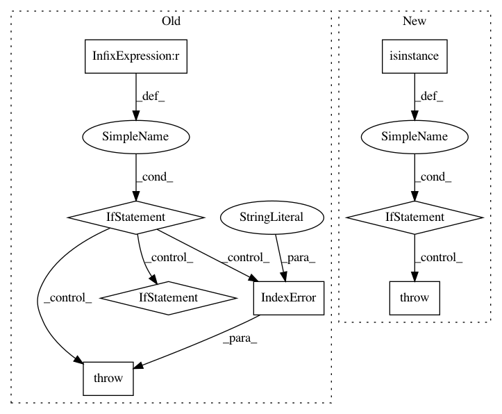

efc54499191ead69f875877badd3578c60eba7a6,nussl/audio_signal.py,AudioSignal,load_audio_from_file,#AudioSignal#Any#Any#Any#,265
Before Change
Defaults to 0 seconds
if signal_length is not None and signal_starting_position >= signal_length:
raise IndexError("signal_starting_position cannot be greater than signal_length!")
try:
with audioread.audio_open(os.path.realpath(input_file_path)) as input_file:
self.sample_rate = input_file.samplerate
file_length = input_file.duration
n_ch = input_file.channels
read_mono = True
if n_ch != 1:
read_mono = False
audio_input, self.sample_rate = librosa.load(input_file_path,
sr=input_file.samplerate,
offset=0,
duration=file_length,
After Change
self.audio_data = audio_input
except Exception as e:
if isinstance(e, ValueError): // This is the error we just raise, re-raise it
raise e
else:
raise IOError("Cannot read from file, {file}".format(file=input_file_path))
self.path_to_input_file = input_file_path
self.set_active_region_to_default()
def load_audio_from_array(self, signal, sample_rate=constants.DEFAULT_SAMPLE_RATE):
In pattern: SUPERPATTERN
Frequency: 3
Non-data size: 8
Instances
Project Name: interactiveaudiolab/nussl
Commit Name: efc54499191ead69f875877badd3578c60eba7a6
Time: 2017-02-08
Author: ethanmanilow@gmail.com
File Name: nussl/audio_signal.py
Class Name: AudioSignal
Method Name: load_audio_from_file
Project Name: interactiveaudiolab/nussl
Commit Name: d5f74cc30a8f0a192d5ef8818c6d72c3707c4a97
Time: 2017-02-04
Author: ethanmanilow@gmail.com
File Name: nussl/audio_signal.py
Class Name: AudioSignal
Method Name: load_audio_from_file
Project Name: brian-team/brian2
Commit Name: 65102dcc0cca9c1779955c12b523b07d1dc6d5ce
Time: 2019-02-13
Author: marcel.stimberg@inserm.fr
File Name: brian2/spatialneuron/spatialneuron.py
Class Name: SpatialNeuron
Method Name: spatialneuron_segment